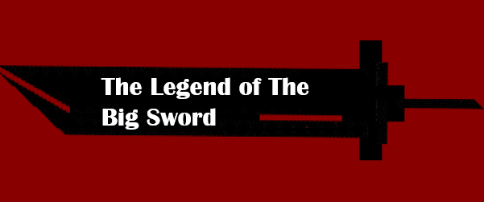

Game Summary
The Legend of the Big Sword is the game we have decided to develop which was heavily inspired by other video games and manga such as Final Fantasy 7, Devil May Cry and Berserk. The game follows the main character with his oversized sword. The Goal of the game is to defeat as many enemies as you can to get a score as high as possible.